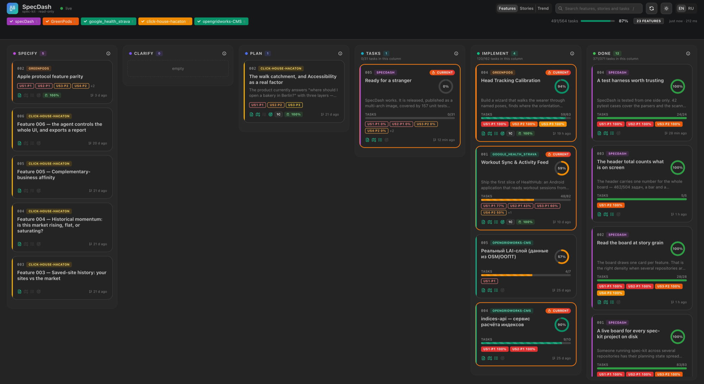
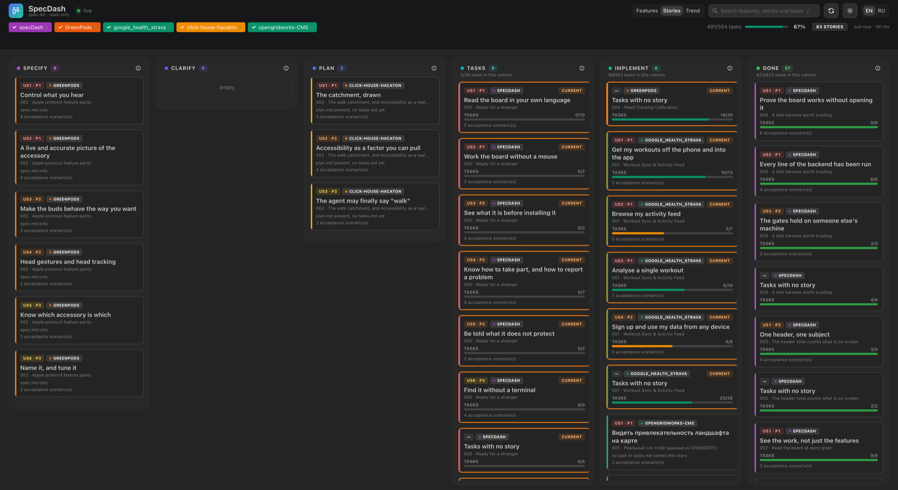
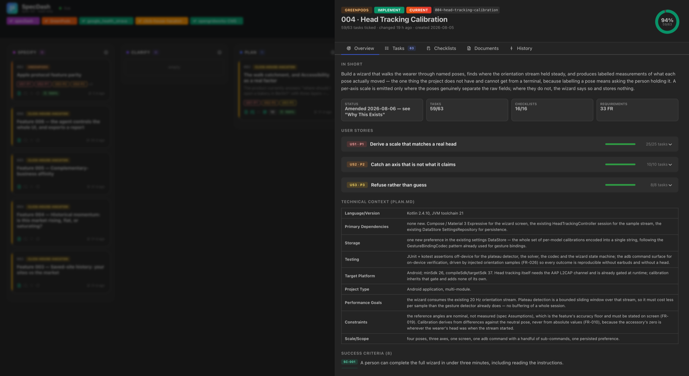
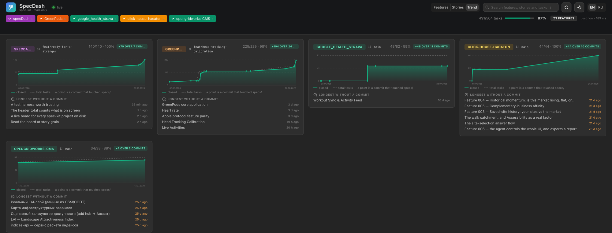

Point it at the folder holding your repositories. It never writes back.
# one image, one port, no database, no internet
docker run -d --name specdash -p 127.0.0.1:8420:8420 \
-v "$HOME/projects:/projects:ro" \
-e WATCHFILES_FORCE_POLLING=1 \
ghcr.io/andrewkomkov/specdash:latest
Every feature of every project, laid out by the stage its files justify. Each card says
why it sits where it does — all 38 tasks ticked, plan.md
present, no tasks.md yet — because a placement you cannot explain is a placement
you cannot trust.

One card per feature when many projects are open. One card per user story when a handful of features would leave the columns nearly empty — each story placed by its own ticked tasks, not its feature’s.


Task completion per commit, read straight out of git log. Nothing is stored.
The dashed line is the total, because work being added is half the story and a chart of
percentages alone hides it.

The projects you point it at are your real work. SpecDash treats them as someone else’s.
The code only opens files for reading. No cache file, no lock file, no “fixing” a malformed document.
Every project is mounted :ro, so a write is refused even if a future line of code asks for one. CI tries it on every build.
A read-only subcommand allow-list with --no-optional-locks. No index.lock appears while you are mid-rebase.
No CDN, no font host, no telemetry, no update check. Every asset is inside the image — including this page.
No login, no token, no per-project permission. Anyone who can reach the port can read
every specification under the mounted root. The command above binds to
127.0.0.1 deliberately — if you want it reachable from elsewhere, put
something in front that asks who is calling.